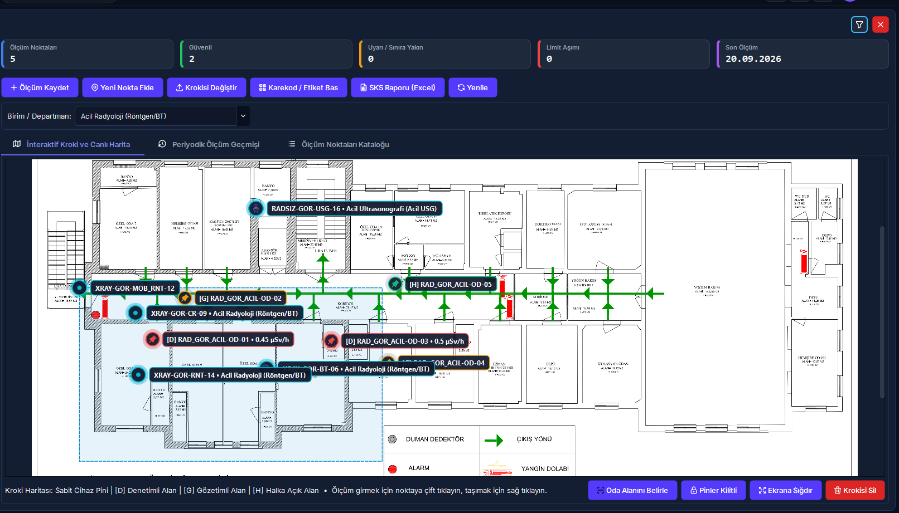
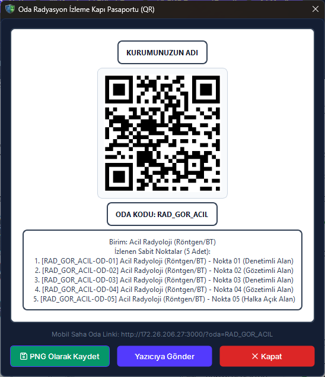

14. Ortam Dozu ve Kroki Haritası
Kurumun mimari kat planları (vektörel PDF veya yüksek çözünürlüklü görsel) üzerinde radyasyon izleme noktalarını ve sabit cihaz konumlarını canlı pinler halinde haritalandıran, periyodik saçılma dozu ölçümlerini kaydeden, yasal eşik kontrollerini otomatik denetleyen, limit aşımında anında DÖF başlatan ve kapı QR pasaport etiketleri üreten modüldür.
>6 mSv/yıl giriş kontrollü radyasyon alanı eşikleri.
1-6 mSv/yıl kumanda masası ve paravan arkası eşikleri.
<1 mSv/yıl bekleme salonu ve koridor eşikleri.
Süresi dolmuş cihazla resmi ölçüm girişi engellenir.
Radyasyon güvenliği ve SKS kalite protokolü gereğince, sistemden basılan QR pasaport etiketleri öncelikle radyasyon odalarının giriş kapılarına yapıştırılır. Saha personeli (RKS/tekniker) tablet veya telefon kamerasıyla kapıdaki QR kodu okuttuğunda, o odaya kayıtlı tüm ortam izleme noktaları anında mobil ekranda listelenir; personel ilgili noktayı seçerek doğrudan sahada hızlı doz girişi gerçekleştirir.
Vizyonder Hızlı Karar Reçetesi (Ortam Dozu & RKS Özeti)
2. Arayüz Bileşenleri ve 5N1K Tablosu
Ortam Dozu ve Kroki Haritası modülündeki ekran kontrolleri, butonlar ve harita eylemlerinin işlevsel kullanım matrisi:
| NE? (Bileşen) | NEDEN? (Amaç) | NEREDE? (Konum) | NASIL? (Çalışma Mantığı) | NE ZAMAN? | KİM? | DURUM |
|---|---|---|---|---|---|---|
| [Birim / Departman] | İncelenecek radyasyon alanını belirlemek. | Filtre Çubuğu Sol | Seçilen birimin kat krokisini, noktalarını ve cihazlarını yükler. | Ekran açıldığında / değişimde. | RKS / Birim Sorumlusu | Aktif |
| [Ölçüm Kaydet] | Periyodik doz ölçümünü sisteme girmek. | Ana Araç Çubuğu | Nokta, tarih, doz hızı, cihaz ve personeli kaydeder; kalibrasyon denetler. | Periyodik ölçümde. | RKS / Fizikçi / Tekniker | Aktif |
| [Yeni Nokta Ekle] | Krokide yeni doz izleme noktası açmak. | Ana Araç Çubuğu | Ardışık kod üretir ({DEP}-OD-01), alan sınıfı eşiklerini atar. |
Yeni oda/mahal eklendiğinde. | RKS / Sistem Yöneticisi | Aktif |
| [Kroki Yükle / Değiştir] | Mimari kat planı dosyasını bağlamak. | Ana Araç Çubuğu | PDF/PNG dosyasını yükler, şifreli kasada saklar, birimle eşleştirir. | Plan atama veya revizyonda. | RKS / Sistem Yöneticisi | Aktif |
| [Karekod / Etiket Bas] | Kapı veya nokta QR etiketi üretmek. | Ana Araç Çubuğu | Oda kapı pasaportu veya tekil nokta etiketi diyaloğunu açar. | Fiziksel levha asılırken. | RKS / İSG Uzmanı | Aktif |
| [SKS Raporu (Excel)] | SKS 6.1 resmi denetim çıktısı almak. | Ana Araç Çubuğu | Renk kodlu, kurum antetli resmi denetim Excel dosyasını (.xlsx) üretir. |
Kalite denetimlerinde. | Kalite Birimi / RKS | Aktif |
| [Pinler Kilitli / Taşıma] | Pinlerin kazara kaymasını önlemek. | Kroki Tuvali Altı | Kilitliyken sürüklemeyi engeller; açıldığında koordinat taşımaya izin verir. | Pin yerleşimi yapılırken. | Yetkili Kullanıcı | Aktif |
| [Oda Alanını Belirle] | Krokide zırhlı oda sınırını çizmek. | Kroki Tuvali Altı | Çizim modunu açar; fareyle seçilen dikdörtgeni odanın sınırları yapar. | Birim sınırları çizilirken. | RKS / Sistem Yöneticisi | Aktif |
| [Nokta Silme Engeli] | Kalite denetim geçmişini korumak. | Servis Katmanı | Üzerinde kayıtlı ölçüm bulunan noktaların silinmesini kesinlikle engeller. | Silme talebinde. | Sistem Motoru | Emniyet Kilidi |
3. İnteraktif Kroki Tuvali ve Canlı Harita
Radyasyon alanlarının canlı harita üzerinde yönetimi, çok katmanlı görselleştirme ve pürüzsüz gezinme özellikleri:

Görsel 14.1: İnteraktif mimari kroki tuvali, zırhlı oda sınırları, canlı renkli ölçüm pinleri ve KPI göstergeleri.
Pürüzsüz Yakınlaşma (Zoom)
Fare tekerleğini ileri çevirerek imlecin bulunduğu odaya yüksek çözünürlükte yakınlaşabilir, geri çevirerek tüm kat planına dönebilirsiniz.
Serbest Gezinme (Pan)
Sol fare tuşunu basılı tutup sürükleyerek (ScrollHandDrag) harita tuvalinde kaydırma çubuklarına gerek kalmadan akıcı şekilde dolaşabilirsiniz.
Sabit Cihaz Pinleri
BT, Skopi, X-Ray veya LINAC cihazları kendilerine ait SVG modalite simgeleriyle harita üzerinde sabitlenir; oda numarası ve künyesi gösterilir.
4. NDK Alan Sınıfları ve Yasal Doz Eşikleri
NDK RSGD-KLV-005 kılavuzuna göre üç temel alan sınıfı ve otomatik alarm eşikleri:
X-ışını tüpünün bulunduğu çekim odaları, zırhlı tedavi odaları ve sıcak laboratuvarlar.
Denetimli alana bitişik teknisyen kumanda odası, kurşun cam arkası ve hazırlık mahalli.
Hasta bekleme salonları, servis koridorları, hekim odaları ve meskenler.
5. Doz Ölçümü Kaydetme ve Kalibrasyon Emniyeti (RED-02)
Periyodik ölçüm giriş adımları ve kalibrasyon kontrolü emniyet mekanizması:
- Üst araç çubuğundaki [Ölçüm Kaydet] butonuna tıklayın veya harita üzerindeki ilgili ölçüm noktası pinine çift tıklayın.
- Açılan pencerede Ölçüm Noktası, Ölçüm Tarihi, ölçülen Doz Hızı ($\mu\text{Sv/h}$) ve Doğal Arka Plan değerlerini girin.
- Kullanılan ölçüm aletinin marka, model ve seri numarasını yazın; ölçümü yapan personeli seçin.
- Kalibrasyon Emniyet Kilidi (RED-02): Sistem, kullanılan cihazın veritabanında kayıtlı kalibrasyon süresini kontrol eder. Kalibrasyon süresi dolmuşsa sistem ölçüm kaydını emniyet kilidiyle reddeder:
HATA: Kullanılan ölçüm cihazının kalibrasyon geçerlilik süresi dolmuştur. NDK ve SKS kalite standartları gereğince kalibrasyonu geçmiş cihazla resmi ölçüm kaydedilemez.
- Bilgiler eksiksiz ise [Ölçümü Kaydet] butonuna basarak işlemi tamamlayın.
6. Limit Aşımı Alarmı ve Otomatik DÖF Entegrasyonu
Doz limitleri aşıldığında sistemin devreye soktuğu otomatik güvenlik ve kalite mekanizması:
Otomatik Olay Bildirimi
Ölçülen doz değeri ilgili noktanın limit eşiğini aştığı anda sistem arka planda Olay Bildirimi (Modül 15) modülüne otomatik kayıt oluşturur:
- Olay Tanımı: Nokta kodu, ölçülen doz ve yasal limit bilgisi.
- Olay Sonucu: "Orta Zarar" olarak derecelendirilir.
- Acil Müdahale: "Girişler sınırlandırıldı, zırhlama kontrolü başlatıldı."
- NDK Bildirim Bayrağı: Doz limitin 3 katını aşarsa zorunlu kılınır.
Otomatik DÖF Ataması
Sistem yalnızca olay kaydı açmakla kalmaz; kalite yönetim süreci uyarınca sorumlu personele doğrudan düzeltici işlem görevi yükler:
- Faaliyet Tipi: "Düzeltici Önleyici Faaliyet (DÖF)"
- Açıklama: "Ortam dozu limit aşımı zırhlama ve sızıntı incelemesi"
- Sorumlu: Ölçümü yapan personel veya RKS sorumlusu
- DÖF Kapatma Kilidi: Sorun giderilip DÖF kapatılana dek olay açık kalır.
7. Karekod (QR) Pasaport Etiketi ve SKS Excel Raporu
Fiziksel kapı/nokta levhalandırması ve Sağlık Bakanlığı kalite denetim çıktısı:

Görsel 14.2: Radyasyon alanı ve ölçüm noktası termal QR pasaport etiketi penceresi.
Oda Kapı QR Pasaportu
Üstteki [Karekod / Etiket Bas] butonuna tıklayıp Oda Kapı Karekod Etiketi Bas seçeneğini belirleyin. Çıktı alınan etiket radyasyon odasının giriş kapısına yapıştırılır. Termal etiket yazıcıdan anında yazdırılabilir veya PNG olarak dışa aktarılabilir.
SKS 6.1 Resmi Excel Denetim Raporu
[SKS Raporu (Excel)] butonuna basıldığında sistem; kurum antetini, birim adını, ölçüm noktası kodlarını, alan sınıflarını, ölçüm tarihlerini, ölçülen dozları ve eşikleri içeren, limit aşımını kırmızı, uyarıları sarı renkle vurgulayan resmi Excel raporunu (.xlsx) üretir.
8. Hibrit Saha Tablet Akışı ve Web Portalı
Masaüstü yönetim kokpiti ile mobil saha uygulamasının çift yönlü senkronizasyonu:
1. Masaüstü Yönetim Merkezi (PySide6)
Kat planı PDF dosyalarının yüklendiği, oda sınırlarının çizildiği, sabit cihazların konumlandırıldığı, yasal eşik limitlerinin belirlendiği, pin kilitlerinin açılıp kapandığı ve resmi denetim Excel raporlarının alındığı ana merkezdir.
2. Saha Mobil Portalı (Tablet / Telefon)
Saha teknisyeni kapıdaki QR kodu tablet kamerasıyla okutur; ekranda odaya ait zırhlı kroki ve ölçüm noktaları listelenir. Teknisyen cihazdan okuduğu dozu doğrudan sahada girer; veri anında masaüstü sistemine ve web analitik paneline yansır.
9. Karar Akış Şeması
Ortam dozu ölçümü, eşik denetimi ve otomatik olay sürecinin mantıksal işleyiş şeması:
Ortam Güvenliği & Mit Avcısı (Kritik Kurallar)
"Kalibrasyon geçerlilik süresi 1-2 hafta geçmiş radyasyon ölçüm cihazı ile acil durumlarda resmi ortam dozu kaydı yapılabilir."
NDK mevzuatı ve RED-02 güvenlik kilidi gereğince kalibrasyon süresi dolmuş hiçbir cihazla sisteme resmi ölçüm girilemez; sistem ölçüm kaydını kesin olarak engeller.
"Kapıdaki QR kod sadece personelin bilgi alması içindir; ölçüm girmek için masaüstü yazılımı zorunludur."
Oda kapısındaki QR kod doğrudan mobil tarayıcıda hızlı doz giriş arayüzünü açar. RKS veya tekniker masaüstüne dönmeden sahada cep telefonuyla ölçümü anında tamamlar.
"Ölçüm geçmişi olan bir radyasyon izleme noktası kroki planı değiştiğinde kolayca silinebilir."
SKS 6.1 ve denetim izi gereğince üzerinde geçmiş ölçüm verisi bulunan hiçbir nokta silinemez; yalnızca 'Pasif'e alınabilir veya taşınabilir.
10. Sıkça Sorulan Sorular (SSS)
Ortam Dozu ve Kroki Haritası modülüyle ilgili en sık karşılaşılan sorular ve yanıtları:
❓ Mimari kat planı olarak vektörel PDF dosyası yükleyebilir miyim?
Evet. RADPYS v4 mimarisi PNG, JPG ve BMP resimlerinin yanı sıra vektörel mimari .pdf kat planlarını doğrudan destekler. Yüklenen PDF dosyasının ilk sayfası yüksek çözünürlükte render edilerek grafik tuvaline aktarılır.
❓ Haritadaki pinlerin fareyle gezinirken kazara kayması nasıl önlenir?
Varsayılan olarak harita [Pinler Kilitli] modunda açılır. Bu moddayken pinler sabitlenmiştir; fareyle sürüklenseniz dahi koordinatları değişmez. Konumları değiştirmek için butona basarak [Taşıma Aktif] moduna geçmeniz gerekir.
❓ Ölçüm geçmişi olan bir noktayı yanlışlıkla silmek mümkün müdür?
Hayır. SKS 6.1 ve NDK kalite denetim izlerinin korunması amacıyla, üzerinde en az bir adet kayıtlı doz ölçümü bulunan noktaların silinmesi sistem tarafından emniyet kilidiyle engellenir.
❓ Cihaz kalibrasyon süresi dolduğunda ne yapılmalıdır?
Kalibrasyon geçerlilik süresi dolmuş bir survey meter ile ölçüm girilemez (RED-02). Cihaz yetkili kalibrasyon merkezine (örn: TENMAK SSDL) gönderilmeli ve kalibrasyon tamamlandığında cihaz kartındaki tarih güncellenmelidir.